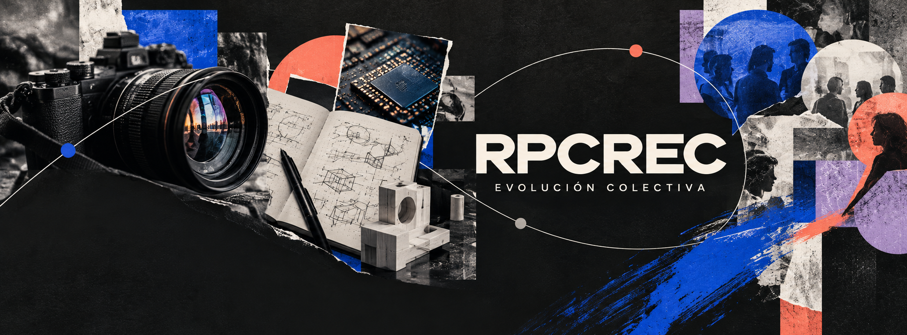

Ricardo Coronel Ruiz · Madrid
Evolución
colectiva.
Un espacio para compartir tecnología, creatividad e ideas que nos ayuden a entender, crear y crecer juntos.
Estamos construyendo algo nuevo. Pronto encontrarás más aquí.

Un espacio para compartir tecnología, creatividad e ideas que nos ayuden a entender, crear y crecer juntos.
Estamos construyendo algo nuevo. Pronto encontrarás más aquí.